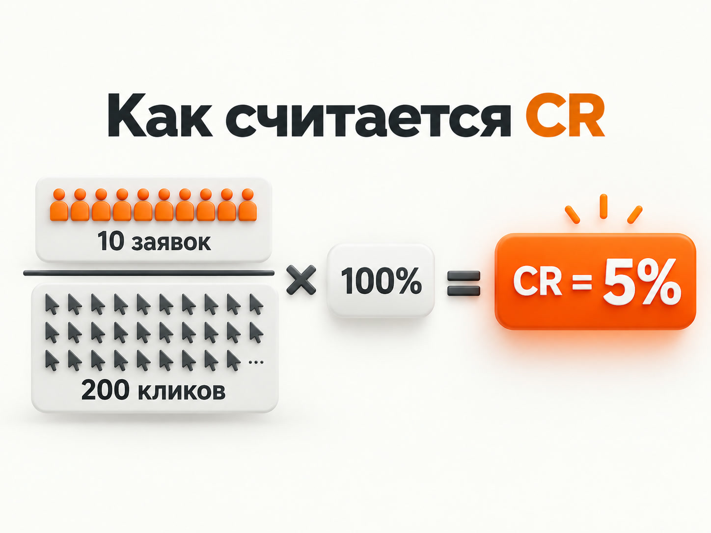
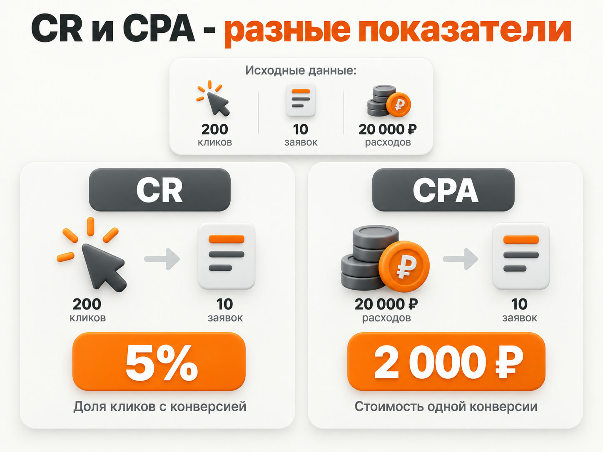

Блог о платном трафике
Конверсия в Яндекс Директ: что это и как ее считать
Конверсия в Яндекс Директе - это целевое действие пользователя после взаимодействия с рекламой: заявка, звонок, добавление товара в корзину или оформленный заказ.
Словом «конверсия» часто называют и сам факт целевого действия, и коэффициент конверсии CR - процент пользователей, которые совершили нужное действие после перехода по рекламе.
В статистике Яндекс Директа можно смотреть отдельно количество конверсий, CR и CPA - стоимость одной конверсии.
Что считается конверсией
Конверсией может быть практически любое действие, которое имеет значение для бизнеса:
- отправка формы;
- звонок или заказ обратного звонка;
- регистрация;
- добавление товара в корзину;
- оформление и оплата заказа.
Сначала такое действие обычно настраивается как цель в Яндекс Метрике. Затем данные Метрики используются в Яндекс Директе. Как убедиться, что цель фиксируется, разобрано в статье «Как проверить цель в Яндекс Метрике».
Для сайта стоматологии главной конверсией может быть заявка на прием, для интернет-магазина - покупка, для сложной B2B-услуги - форма или звонок. Само по себе посещение сайта обычно не приближает человека к покупке, поэтому его редко стоит выбирать основной целью.
Как рассчитывается конверсия в Яндекс Директе
Коэффициент конверсии обозначается CR, от английского Conversion Rate.
CR = количество конверсий / количество кликов × 100%
Например, реклама получила 200 кликов, а после переходов было зафиксировано 10 заявок. Расчет: 10 / 200 × 100% = 5%. Значит, в среднем пять переходов из ста закончились выбранным целевым действием.

Чем конверсия отличается от CPA
CR показывает, какая доля переходов заканчивается целевым действием. CPA показывает, сколько рекламодатель в среднем заплатил за одно такое действие.
CPA = расходы на рекламу / количество конверсий
Если расход составил 20 000 рублей, было 200 кликов и 10 заявок, то CR равен 5%, а CPA - 2 000 рублей. Это связанные, но разные метрики: высокий CR сам по себе еще не означает, что реклама выгодна.
Подробнее о расчете стоимости целевого действия - в статье «CPA в Яндекс Директе: что это и как считать».

Какая конверсия считается хорошей
Универсального процента хорошей конверсии для Яндекс Директа нет. У разных бизнесов отличаются аудитория, стоимость продукта, цикл сделки и само целевое действие.
Оценивать CR полезно относительно стоимости конверсии, качества заявок, количества продаж, допустимой стоимости привлечения клиента, предыдущих периодов, кампаний, аудиторий и посадочных страниц.
Высокий CR в ненужную цель не приносит бизнесу результата. Например, можно считать конверсией просмотр двух страниц сайта и получать много дешевых «конверсий», но не больше покупателей.
Зачем конверсии нужны самому Яндекс Директу
Данные о целевых действиях нужны не только для отчетов. Яндекс Директ использует их в автоматических стратегиях, чтобы подбирать показы и ставки с учетом вероятности нужного действия.
Если передавать алгоритму реальные заявки и покупки, он получает сигнал о нужной аудитории. Если оптимизировать рекламу на слишком простое действие, например просмотр страницы, система может искать людей, которые выполняют именно его, но не обязательно становятся клиентами.

Как настроить отслеживание конверсий
- Установите на сайт счетчик Яндекс Метрики.
- Создайте цель на нужное действие.
- Проверьте, что цель действительно срабатывает.
- Используйте счетчик в кампании Яндекс Директа.
- Выберите нужную цель как целевое действие для стратегии.
- Анализируйте статистику в Директе и Метрике.
На сайтах Tilda настройку целей можно выполнить по инструкции «Цели Яндекс Метрики на Tilda: отправка форм и квиз». Для интернет-магазинов также используются данные электронной коммерции, а для сделок вне сайта - офлайн-конверсии.
Где посмотреть конверсии в Яндекс Директе
Для подробного анализа используется Мастер отчетов. В отчет можно добавить показатели «Конверсии», CR и CPA, а затем сравнить результат кампаний, групп, условий показа и других срезов.
| Кампания | Клики | Заявки | CR |
|---|---|---|---|
| Кампания 1 | 100 | 10 | 10% |
| Кампания 2 | 100 | 2 | 2% |
В среднем реклама получила 12 заявок из 200 кликов, то есть CR составил 6%. Но таблица показывает, что качество трафика у кампаний отличается - поэтому полезно анализировать не только общую цифру по аккаунту.
От чего зависит конверсия
На CR влияет не только Яндекс Директ. Важны качество трафика, соответствие объявления посадочной странице, сам оффер, удобство и скорость сайта, а также корректность аналитики.
Падение CR нельзя автоматически считать проблемой настройки Директа. Сначала нужно определить, на каком участке воронки теряются пользователи. Базовую механику рекламной системы объясняет статья «Как работает Яндекс Директ».
Конверсия - это не конечная цель рекламы
Для бизнеса важна не сама цифра CR, а результат за ней. Кампания с меньшим количеством заявок может приносить больше продаж, если заявки качественнее. По мере накопления данных полезно передавать в аналитику информацию о качественных лидах, заказах и продажах.
Конверсия в Яндекс Директе показывает, какая часть рекламного трафика выполняет нужное действие. Использовать ее стоит вместе с CPA и реальными бизнес-результатами - тогда статистика помогает понять, приносит ли реклама клиентов.